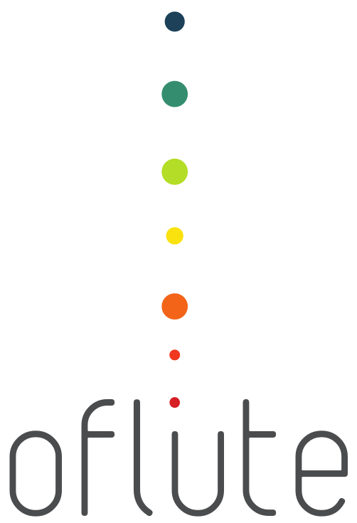
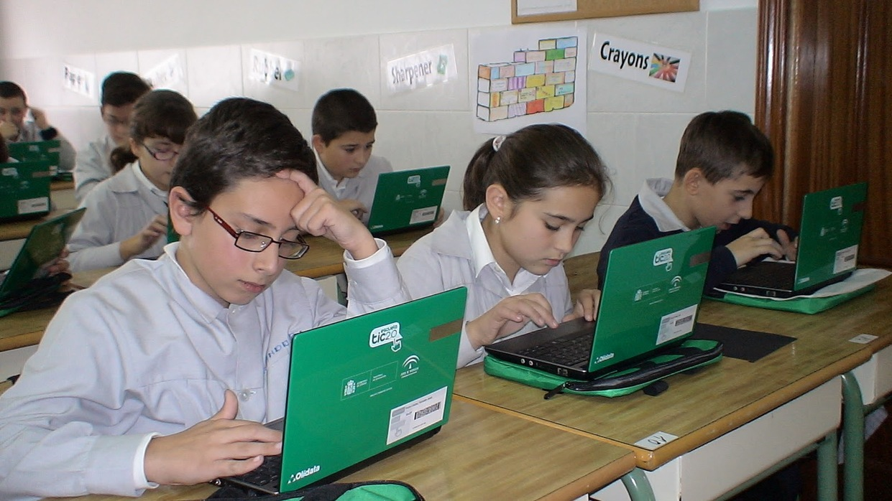
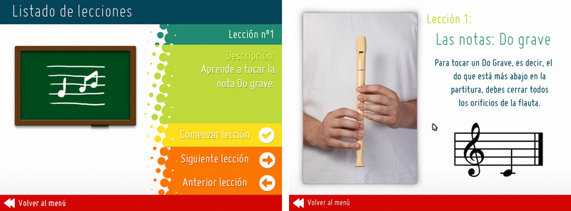
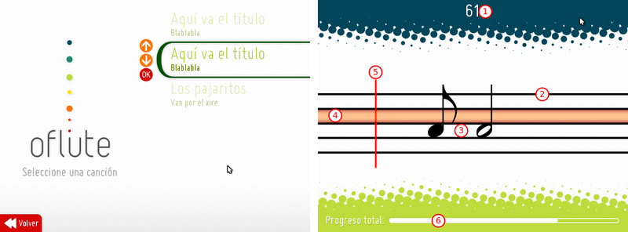
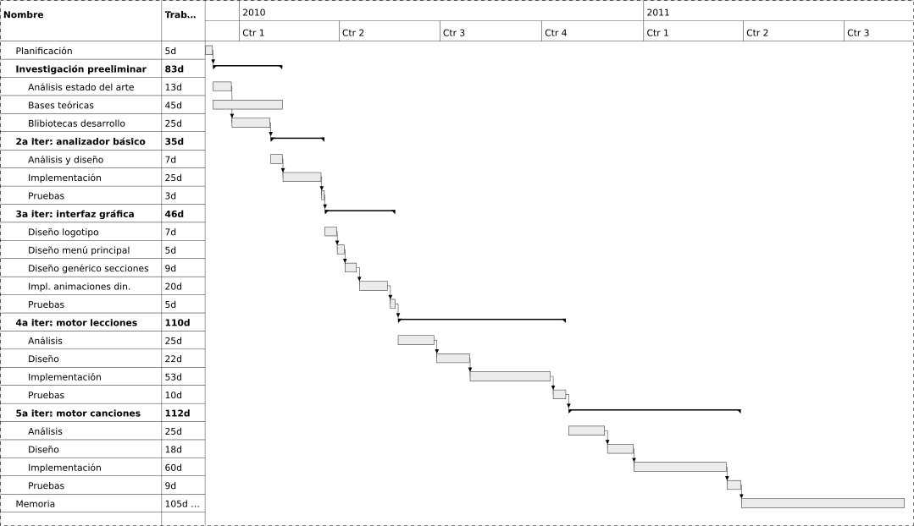
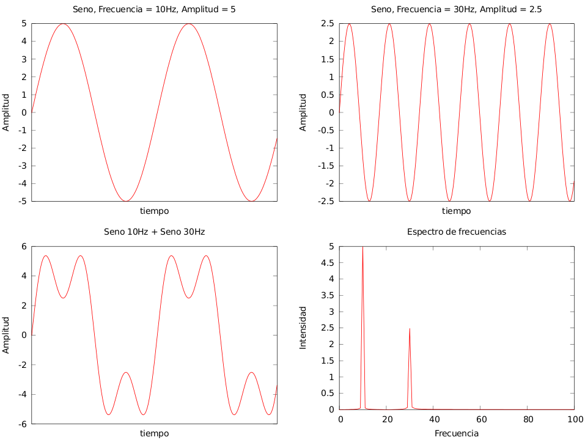
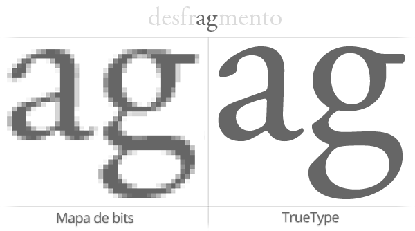
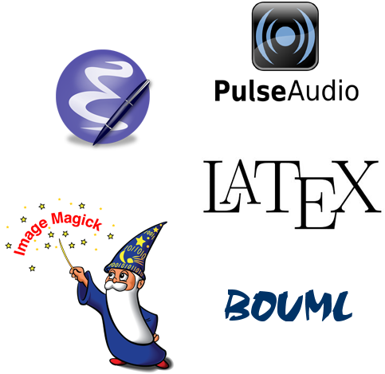

Reconocimiento de señales aplicado
al aprendizaje de la flauta dulce
José Tomás Tocino García
Ingeniería Técnica en Informática de sistemas
Septiembre de 2011
Índice
- Introducción
- Descripción
- Calendario
- Fundamentos teóricos
- Desarrollo
- Herramientas
- Conclusiones y difusión
- Bibliografía
Introducción
Contexto social - Escuela TIC 2.0

Concepción del proyecto
Idea:
hacer un juego educativo
Primera cuestión:
¿sobre qué aspecto educativo? ¿Qué
asignatura se beneficia?
Música
Aprendizaje de la flauta dulce
Objetivos
- Módulo de análisis de sonido.
- Sistema de interpretación de canciones.
- Sistema de lecciones ampliable.
- Interfaz de usuario amigable y fluida.
Motivaciones
- Aprender sobre programación de audio y DSP (procesamiento digital de señales).
- Ampliar conocimientos sobre desarrollo de videojuegos.
- Aportar al software libre.
Descripción
oFlute

Herramienta lúdico-educativa para
el aprendizaje de
la flauta dulce.
Interacción del alumno con la flauta en tiempo
real.
Analizador de notas

Analiza las notas en tiempo real, de forma individual
Motor de lecciones

Motor de lecciones con recursos multimedia,
totalmente ampliable y personalizable.
Motor de canciones

Motor de canciones ampliable, permite la
interpretación interactiva de canciones.
Calendario
Planificación - Desarrollo iterativo
- Adquisición de base de conocimientos.
- Desarrollo de analizador básico.
- Interfaz gráfica de usuario.
- Motor de lecciones.
- Motor de canciones.
Diagrama de Gantt

Fundamentos teóricos
El sonido
El sonido es una vibración en forma de onda.

- Frecuencia: oscilaciones por unidad de tiempo.
- Amplitud: energía que transporta la onda.
- Fase: desplazamiento respecto del origen.
Descomposición de sonidos
Los sonidos no suelen ser ondas puras, se componen de parciales.
Frecuencia fundamental: menor de los parciales. Dicta
la altura general del sonido.
Los armónicos son parciales múltiplos de la frecuencia
fundamental, enriquecen y caracterizan el sonido.
Objetivo: descomponer el sonido para obtener
la frecuencia fundamental.

Herramientas de análisis armónico
Trabajan en el dominio de la frecuencia.
La transformada de Fourier es la más conocida: descompone
una señal en sus componentes senoidales.
Datos discretos: DFT - Discrete Fourier Transform.
Algoritmo más habitual: FFT - Fast Fourier Transform.
Desarrollo
Objetivo:
Desarrollar un módulo que capture el sonido
del micrófono, lo analice y detecte la nota que se está tocando.

Objetivo:
Cargar y usar fuentes TrueType en oFlute
TrueType

- Formato estándar para fuentes.
- Escalado sin pérdida.
Gosu
oFlute utiliza Gosu
como sistema gráfico.

- Open Source.
- Aceleración por hardware.
- Desarrollo ágil.
TrueType en Gosu
Objetivo: cargar y usar fuentes TrueType en Gosu
Solución: implementar un módulo propio
para fuentes TrueType.
El módulo se liberó. Ahora forma parte oficial de Gosu.
// Used for custom TTF files
// Adapted from customFont class by Jose Tomas Tocino Garcia
class SDLTTFRenderer : boost::noncopyable
Objetivo:
Conseguir interfaces amigables y dinámicas
Interfaces con animaciones dinámicas
Objetivo: conseguir interfaces amigables y fluidas.
Solución: diseño de sistema de
animaciones dinámicas
Movimientos de aceleración, deceleración, uniformes, etc. sobre un
número arbitrario de atributos.
Objetivo:
Internacionalización de oFlute
Internacionalización de Gosu
Objetivo: internacionalizar el proyecto de manera fácil.
Solución: utilizar un sistema estándar, GNU Gettext,
el más usado en proyectos libres.
Cualquiera puede traducir oFlute.
Analizador de notas ⇔ ノートアナライザ
Publicación de Traducción de proyectos con GNU Gettext en 15
minutos.
Herramientas
Lenguaje de programación: C++
- Mayor familiaridad.
- Muy eficiente.
- Gran cantidad de herramientas y soporte.
Sistema gráfico: Gosu
- Multiplataforma.
- Orientada a objetos.
- Aceleración gráfica por hardware.
Herramientas
Propósito general: Boost
Bibliotecas para C++, libres,
muy populares y con gran madurez. Varias forman parte del nuevo estándar
C++11.

- Punteros inteligentes.
- Hilos.
- Conversiones.
- Expresiones regulares.
- Programación funcional.
- Asertos estáticos.
Otras herramientas

- PulseAudio
- PugiXML
- KissFFT
- GNU GCC y GDB
- LaTeX
- BoUML
- Planner
- ImageMagick
- ...
Conclusiones y difusión
Conclusiones del proyecto
Todos los objetivos completados:
- Módulo de análisis de notas eficiente.
- Sistema de canciones efectivo.
- Sistema de lecciones muy completo.
- Interfaz agradable y fluida.
Posibles mejoras.
- Extender el sistema de lecciones.
- Mejorar jugabilidad de las canciones.
- Portar el juego a otras plataformas.
Conclusiones
A nivel personal
- Proyecto muy longevo.
- Mucho conocimiento nuevo adquirido: DSP, programación de audio, hilos,
matemáticas...
- Mucho conocimiento generado.
- Cercano a proyectos comerciales.
Conocimiento generado
Taller de Boost
Workshop práctico sobre las bibliotecas de Boost
incluidas en el nuevo estándar C++11.
Taller de Gosu
Más de 50 asistentes, desarrollo de un clon del Arkanoid.
Tutorial de GNU Gettext
Manual de i18n para proyectos. También se impartió un taller.
Proyectos derivados: Freegemas
A partir del código de
oFlute: Freegemas, clon libre y multiplataforma de
Bejeweled, para Windows y Linux.

- Tres publicaciones en Linux Magazine.
- Inclusión oficial en Guadalinex v8.
Difusión
Social media
Forja
Referencia del código
IV Concurso Universitario de Software Libre
- Mención especial a nivel nacional de entre más de 100 proyectos.
- Fase local: accésit al mejor proyecto de innovación.
Guadalinex
- oFlute se encuentra en los repositorios de Guadalinex.
Bibliografía
- Comp.DSP Newsgroup
http://www.dsprelated.com/compdsp.php
- Learning UML 2.0
Miles & Hamilton, O’Reilly, 2006
- Digital Signal Processing, a Computer Science Perspective
Jonathan Stein, Wiley-Interscience, 2000
- Understanding Digital Signal Processing
Richard Lyons, Prentice Hall, 2001.
- Design Patterns
Erich Gamma y asociados., Addison Wesley, 1994
Demostración
Gracias por su atención
¿Preguntas?
oflute.googlecode.com